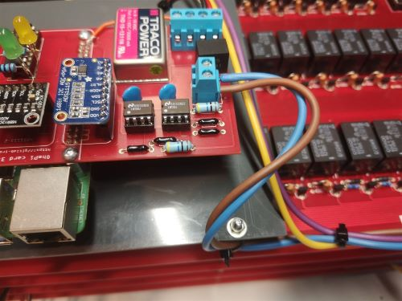
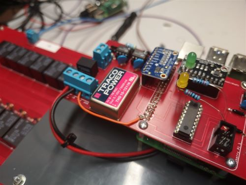

Warning
OhmPi is a participative project open to all, it requires skills in electronics and to respect the safety rules. OhmPi must be assembled in a professional context and by people competent in electronics. The OhmPi team cannot be held responsible for any material or human damage which would be associated with the use or the assembly of OHMPI. The OhmPi team cannot be held responsible if the equipment does not work after assembly.
STEP n°4: assemble the OhmPi
1 |

|
Cut 4 ribbon cables composed of 16 wires each to the proper length (about 1.5m). Each wire corresponds to an electrode. |
2 |

|
Crimp the ribbon cable on the corresponding idc connector with a suitable clamp. Pay attention to the direction of the cables. Unbalanced IDC connector. The ribbon cable must be perpendicular to the connector. |
3 |

|
Example of IDC connector mounting. The wires should run as perpendicular as possible to the IDC connector. |
4 |

|
Same for a 6 wires ribbon cable of 1 m length. |
5 |

|
Cut the ribbon cable flush with the IDC connector. |
6 |

|
Position 9 spacers above the MUX board, and 9 spacers below |
|

|
|
Profile view for mounting the spacers above and below. |
7 |

|
Cut a 50 cm long wire of any color (here yellow). Strip and tin each end of the wire. Install the wire “A” on the screw terminal of MUX board « A ». |
8 |

|
Cut a red wire and a black wire of 50 cm length. Strip, tin and position the wires on the left screw terminal as shown in the picture: i)Red wire 12 V, ii) Black wire GND |
9 |

|
Mount the 4 ribbon cables (16-wires each) with IDC connectors. A small noise is often heard when the IDC connector is clipped in place. |
10 |

|
Mount the ribbon cables with 6-wires with the corresponding IDC connectors |
11 |

|
Cut a red wire and a black wire of 10 cm length. Strip and tin the wires at the ends. Mount the red wire on the 12V input and the black wire on the GND input on the right screw terminal. |
12 |

|
Mount and fix the second MUX board “B” on the first with the help of 9 spacers. |
13 |

|
Cut, strip and tin a red wire and a black wire of 10 cm length. Mount the wires on the left screw terminal. Red wire 12V input, black wire GND input. Connect the red and black wires from board A to the right screw terminal of board B. Red wire 12V input. Black wire GND input. |
14 |

|
Crimp a 16 wires IDC connector on the ribbon cable at about 15 cm from the previous connector. Please, pay attention to the direction of the cable before the crimp procedure. Mount the ribbon cable on the IDC connector on the board. |
15 |

|
Repeat the operation for the other 3 ribbon cables. |
16 |

|
Repeat the operation for the 6 wires ribbon cable. |
17 |

|
Cut a 50 cm long wire “here purple” (Color not relevant but to be defined). Strip and tin the wire at its ends. Position the wire on the input B of the screw terminal of the multiplexing board B. |
18 |

|
Repeat all these operations for the third MUX board called “M”. |
19 |

|
Repeat the operations for the fourth MUX Boards. Attention, it is necessary to position 5 different spacers (here nylon screw hex spacers) in between the “M” board and the “N” MUX Board (as shown on the photograph). Refer to the following photographs for more details on the assembly of the spacers |
20 |

|
When mounting the 4th MUX board (“N”), screws can be placed on the nylon spacers to fix the boards together. Note that the other spacers could be used for this purpose. Connect ribbon cables (16 wires) from board 3 to board 4 as previously described. Connect the red wire (12V) of MUX board “M” to the 12V terminal of the right screw terminal of MUX Board “N”. Connect the black wire (GND) of MUX board “M” to the GND screw terminal on MUX board “N”. |
21 |

|
Cut a red wire and a black wire of one meter length. Place the red wire on terminal “12V” and the black wire on terminal “GND” of the left screw terminal. Tie the wires together. |
22 |

|
Tie the A, B, M and N wires together |
23 |

|
Cut a PVC plate with the following minimum dimensions : 200 mm * 150 mm * 5 mm |
24 |

|
Drill the plate to mount it on the remaining metal spacers. Do not tighten the assembly. |
25 |

|
Position the Raspberry Pi (RPI) board on the plate so that you can access the USB ports. Mark the holes of the RPI board on the plate for mounting. |
26 |

|
Add spacers on the PVC plate. |
27 |

|
Attach the PVC plate to the metal spacers with washers and nuts. |
28 |

|
Position and fix the RPI card on the spacers |
29 |

|
Add spacers on the RPI board. The red (12V) and black (GND) wires coming out of the “M” MUX board must pass under the RPI board. |
30 |

|
Place the measurement board on the RPI GPIO outputs and on the pre-positioned spacers. Note that LEDs are present on this measurement board with an associated resistance simply for testing purposes (do not consider this temporary modification of the board). Same for the orange wire present on the board. |
31 |

|
Connect the wires ” A ” (here yellow), ” B ” (here purple), ” M ” (here brown) and ” N ” (here blue) on the corresponding terminal blocks on the measurement board. Connect the 6 wires ribbon cable on the measurement board by passing under the PVC plate.Connect the red and black wires to the 12 V and GND terminal block. |
32 |

|
Top view of the assembly. Add clips to secure the wires together. |
33 |

|
Second view. |
34 |
 |
Zoom in on the connection of the M and N wires. |
35 |

|
Zoom in on the connection of the A and B wires. |
36 |
 |
Zoom in on the connection of the « 12V » and « GND » wires. |
37 |

|
Fixing the measurement board on the spacers present on the RPI board. |
38 |

|
Place the SD card containing the OS and the pre-installed programs. Connect a mouse and a keyboard to the USB inputs of the RPI board. Connect a monitor to the HDMI output of the RPI board. |
39 |

|
Connect the red and black cables of board A to a 12V battery or other laboratory power supply delivering a 12VDC voltage. Enjoy |